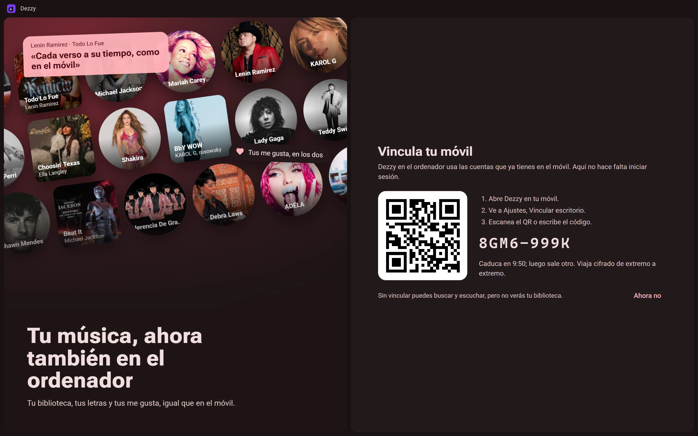

Música sin cortes, de principio a fin.
Sin anuncios ni cuenta, con la letra siguiendo cada palabra.

Abre y suena.
Sin registrarte. Elige un ánimo o una selección rápida y empieza.

Mira cómo se mueve.
El Canvas de cada canción gira en el panel de al lado mientras suena.

Viaja por el mapa.
Toca un país, mira su top con sus géneros y ponlo entero.

Invita a alguien.
Crea una sala, comparte el código y escuchad lo mismo a la vez.

Lo que cambia.
| En | Lo habitual | Dezzy |
|---|---|---|
| Entre canciones | un anuncio | la siguiente |
| Para empezar | crear una cuenta | abrir y escuchar |
| El código | cerrado | abierto, GPL-3.0 |
3.0.8
- Android 6.0 o superior
- Windows, con instalador
- Vincula el móvil con un QR
